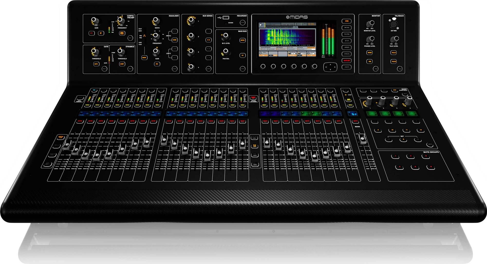

Flex Box y CSS Grid
Flexbox es un modelo flexible que permite organizar los elementos que
contiene una página
según cambien las dimensiones y orientación de la misma. Es por esto,
que facilita hacer
un diseño adaptativo para que las páginas web se visualicen
correctamente en cualquier
dispositivo. Se puede decir que este modelo es unidimensional, es decir,
para diseños
de una fila o una columna.

Grid CSS (generalmente llamada modelo de cuadrícula como Flexbox) se usa
para controlar
La posición del elemento en la página web, en este caso, la pantalla es
Se divide en una especie de cuadrícula virtual,
cuántas celdas de Grid se pueden seleccionar Una cuadrícula o cuadrícula
puede ocupar todos los elementos.
Se puede decir que este modelo es Bidimensional, porque su diseño se
puede realizar en varias filas y columnas al
mismo tiempo.
Referencias
Recio García, J. A. (2016). HTML5, CSS3 y JQuery: curso práctico. RA-MA
Editorial. (Pág. 52 a 108)
Recuperado de
https://elibro-net.bibliotecavirtual.unad.edu.co/es/ereader/unad/106494?page=52